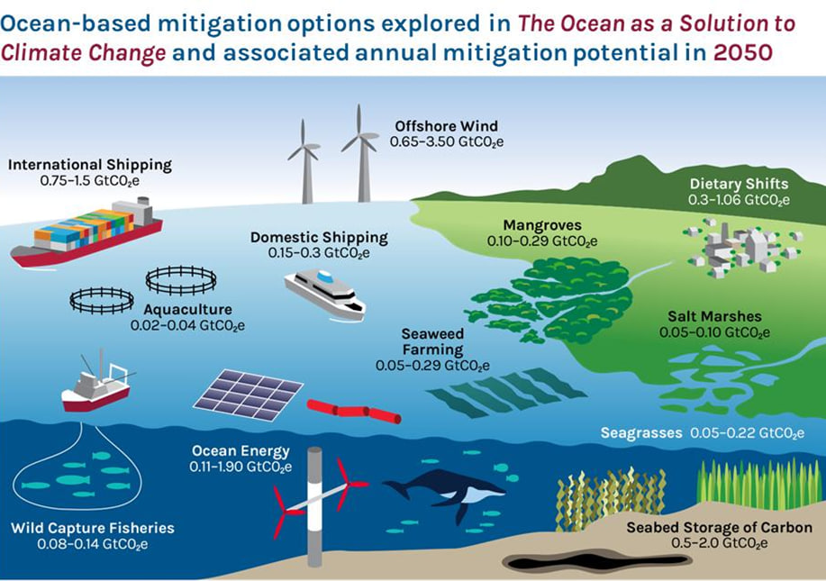
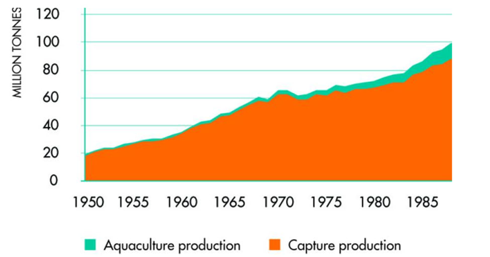
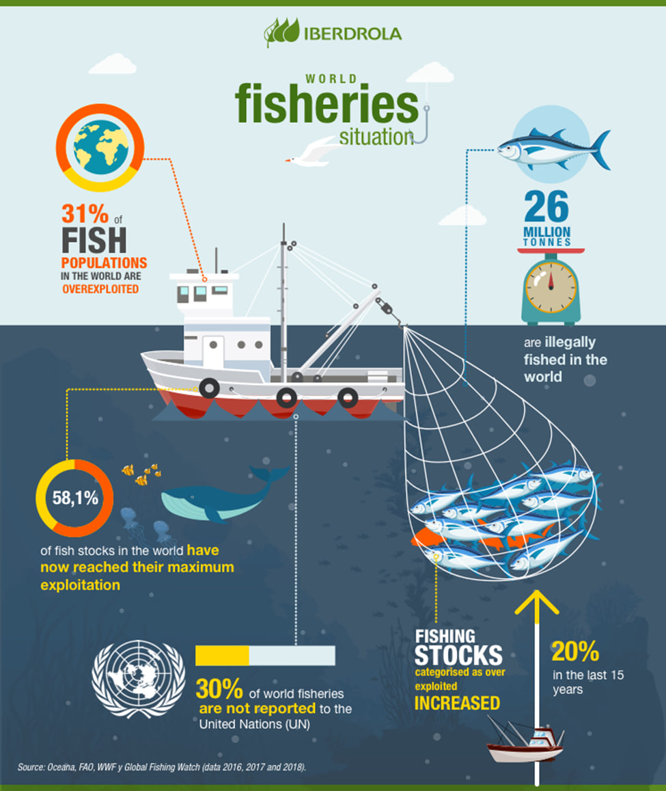

Economic Value

Economic Value
The ocean-based economy, also known as the blue economy, refers to economic activities that revolve around the sustainable utilization and management of ocean and coastal resources. It encompasses a wide range of industries and sectors that depend on the oceans and seas for resources, trade, and economic development. The blue economy recognizes the oceans as a source of wealth, employment, and ecological services, underscoring the need for responsible stewardship to ensure long-term sustainability.
The sustainable blue economy focuses on ocean resource management, tackling issues such as overfishing, pollution, habitat deterioration, and climate change. Fisheries and aquaculture, shipping and maritime transportation, tourism, renewable energy, marine biotechnology, and mining are all important components. The seafloor holds precious minerals, which inspires sustainable practices. Marine conservation and restoration are critical for the protection of biodiversity and resource management. Investing in coastal infrastructure is critical for coastal towns, especially in light of increasing sea levels and climate change. Institutions of scientific research and education develop knowledge and encourage sustainable practices. Sustainable ocean resource management and pollution prevention require effective governance, international agreements, and regulations. Achieving a balance between economic development and ocean protection is critical for a sustainable blue economy.
Sustainable Fisheries
Sustainable fisheries refer to the responsible management and harvesting of aquatic organisms while preserving the environment and supporting the well-being of fishing communities. The goal is to meet current seafood demand while preserving marine ecosystems for future generations.
The Ocean Garden Challenge recognizes the significance of sustainable fishing practices in maintaining marine ecosystems and sustaining coastal people' livelihoods. The challenge seeks to alleviate pressure on wild fish populations and increase food security in locations where traditional fishing may not be practicable by promoting aquaponics as an alternative form of food production. However, in order to ensure long-term sustainability, it is also necessary to handle the issues connected with aquaponics, such as energy requirements and regular training. We can strive towards a more sustainable future for both landlocked populations and marine ecosystems by combining creative techniques and collaborative efforts. Achieving sustainability in fisheries supports marine biodiversity and the livelihoods of communities relying on fishing and aquaculture.
Tourism Potential Related to the Ocean
Tourism's rapid growth can negatively impact marine ecosystems, leading to pollution and overfishing. To mitigate these effects, sustainable tourism practices, such as the Ocean Garden Challenge, can be promoted. Aquaponics, an alternative food source, can help reduce reliance on wild fish populations and promote food security in regions where traditional fishing is not feasible. However, aquaponics faces challenges like energy requirements and ongoing training. A collaborative approach involving local communities, government agencies, and private sector partners can ensure the long-term sustainability of aquaponics and other sustainable food production practices. The potential benefits of sustainable fishing practices and aquaponics are vast, preserving marine ecosystems, supporting local communities, and promoting food security globally.
Coastal tourism, marine wildlife tourism, diving and snorkeling, adventure tourism, eco-tourism, cruise tourism, cultural tourism, wellness tourism, and sustainable tourism are all examples of ocean tourism. These activities allow you to watch marine life, explore coral reefs, go deep sea fishing, kayak, canoe, and more. It also encourages good behavior and conservation excursions. The potential for ocean-related tourism is immense, but it is essential to ensure sustainable practices to protect marine ecosystems.
Conclusion
The ocean-based economy, often known as the blue economy, is a sustainable approach to economic operations that addresses challenges such as overfishing, pollution, habitat deterioration, and climate change through managing ocean and coastal resources. Fisheries, aquaculture, shipping, tourism, renewable energy, marine biotechnology, and mining are all important components. Marine conservation and restoration are critical for the preservation of biodiversity. Responsible management, environmental preservation, and sustainable practices are promoted via sustainable fisheries, aquaponics, and ocean tourism.